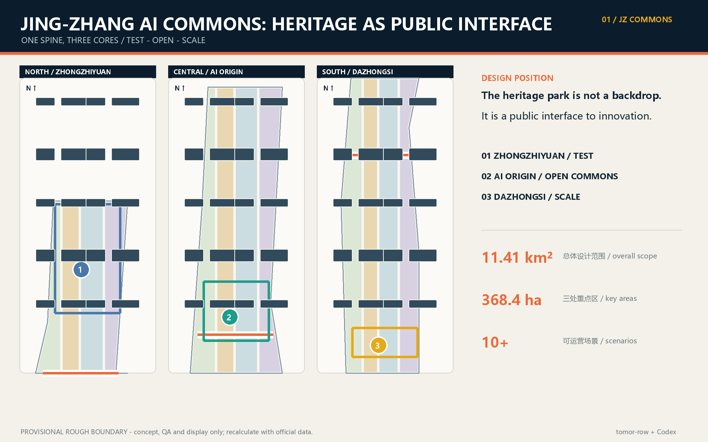
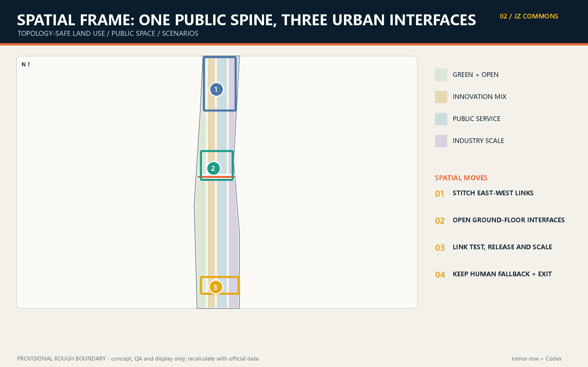
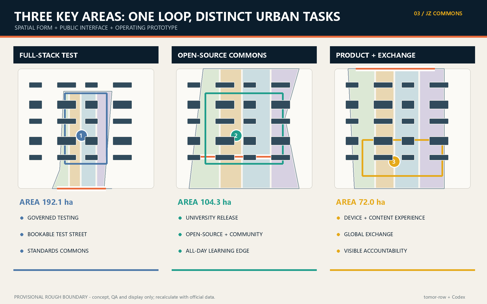
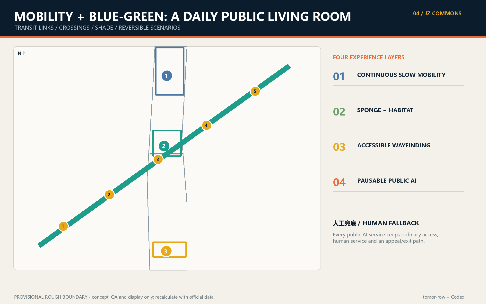

Jing-Zhang AI Commons: A Verifiable Public Innovation Belt
A heritage-first public innovation spine linking governed testing, open-source community and industrial translation.
Jing-Zhang AI Commons: A Verifiable Public Innovation Belt
Design judgment. The Jing-Zhang heritage park becomes a daily public innovation interface rather than a backdrop between compounds. Zhongzhiyuan hosts full-stack testing; the AI Origin Community connects universities, open source and neighborhood services; Dazhongsi translates prototypes into products and international exchange. A slow-mobility and blue-green spine closes the loop. All moves are conceptual references for professional development, not statutory planning or confirmed delivery.
设计依据与资料清单
The package uses only registered public or cleared sources. Repository provisional polygons support concept generation and QA only; they are not official redlines or precise area evidence 来源 来源 深度.

三层范围工作框架
The 43.6 km² research scope frames the ecosystem, the 11.4 km² overall scope organizes renewal, and the three key areas test detailed spatial moves. The submitted boundary remains provisional and every dependent layer must be recalculated when official polygons arrive 空间数据 指标 深度.

统筹研究范围产业与未来城市研究
The concept links research, open-source collaboration, regulated testing, enterprise services, public experience and global exchange. The identity system uses a rail-line motif with three nodes and an open bracket, expressing heritage continuity and an unfinished commons 来源 标准 深度.
总体设计范围城市更新与控规深度城市设计
One heritage spine, three innovation cores, distributed scenario nodes and a blue-green loop coordinate renewal. FAR, height, road redlines and parcel decisions remain pending official controls 空间数据 标准 深度.
重点区域详细设计
Zhongzhiyuan is a governed test campus; AI Origin is an open-source and community commons; Dazhongsi is a product and international showcase district. Each proposal is directional because the three polygons are provisional 空间数据 深度.

AI 创新生态、人才画像与 AI+ 场景
Five personas - developers, start-ups, enterprise visitors, residents and university communities - share ten scenario cards. Three testbeds cover model safety, edge-device interoperability and accessibility/human fallback. Data collection is minimized and consequential decisions retain human review 来源 深度.
用地、建筑规模与拆改留方案
The topology-safe land-use partition is a concept model. Existing-building status, ownership and approved controls are missing, so retain/renovate/demolish/build decisions are methods for later survey, not parcel conclusions 空间数据 指标 深度.
交通、轨道、市政与公共服务设施
The heritage slow-mobility spine connects rail stations, campuses, neighborhoods and innovation cores. Edge compute and distributed energy are optional infrastructure prototypes pending municipal, fire and operational studies 空间数据 深度.

蓝绿空间、公共空间与城市风貌
This section remains aligned with the Chinese primary proposal and its structured evidence layer.
更新项目清单、实施政策与分期计划
This section remains aligned with the Chinese primary proposal and its structured evidence layer.
指标体系、面积复算与合规矩阵
This section remains aligned with the Chinese primary proposal and its structured evidence layer.
风险、版权与合规说明
This section remains aligned with the Chinese primary proposal and its structured evidence layer.
参考资料
This section remains aligned with the Chinese primary proposal and its structured evidence layer.